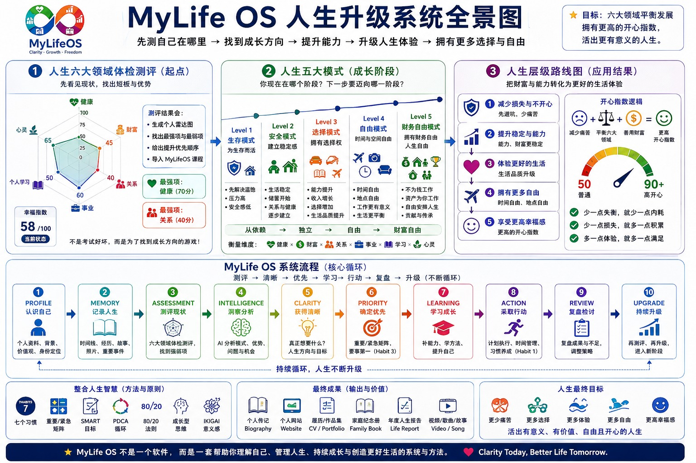
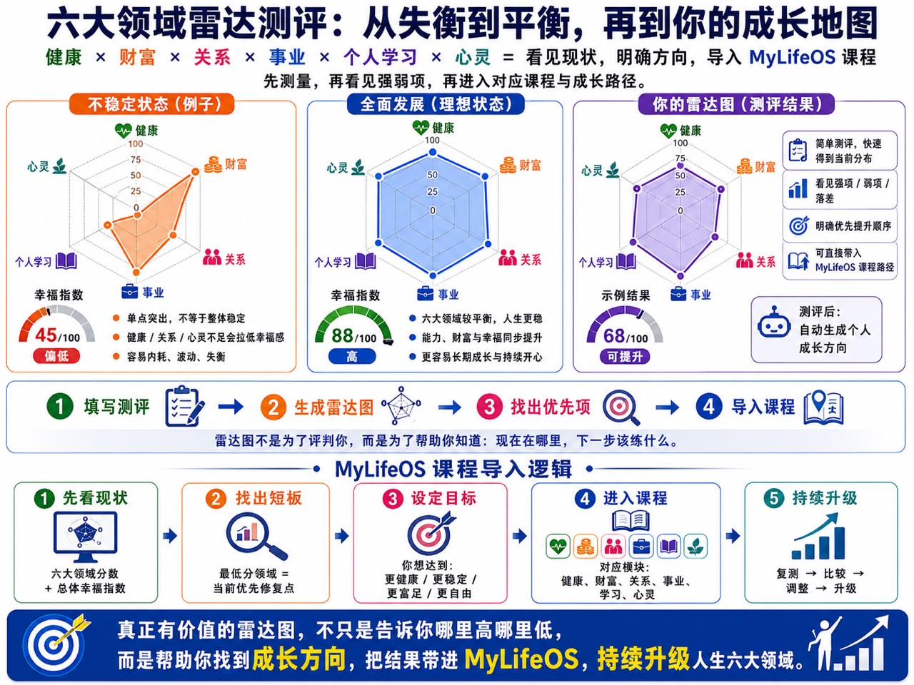
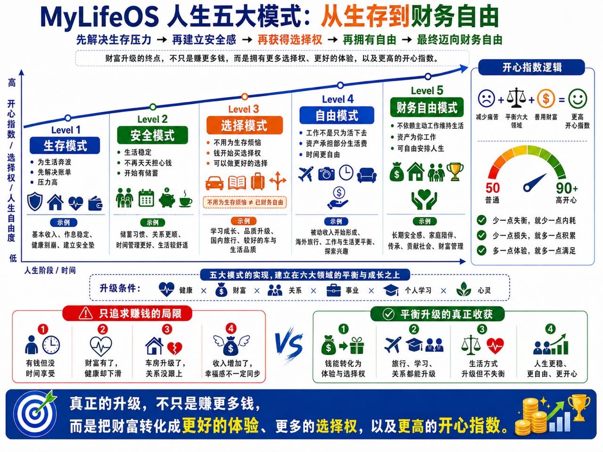
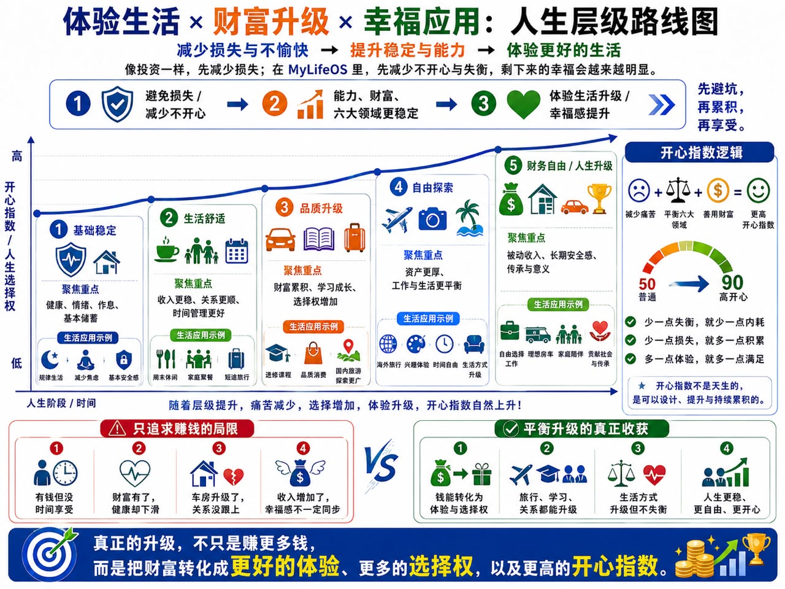
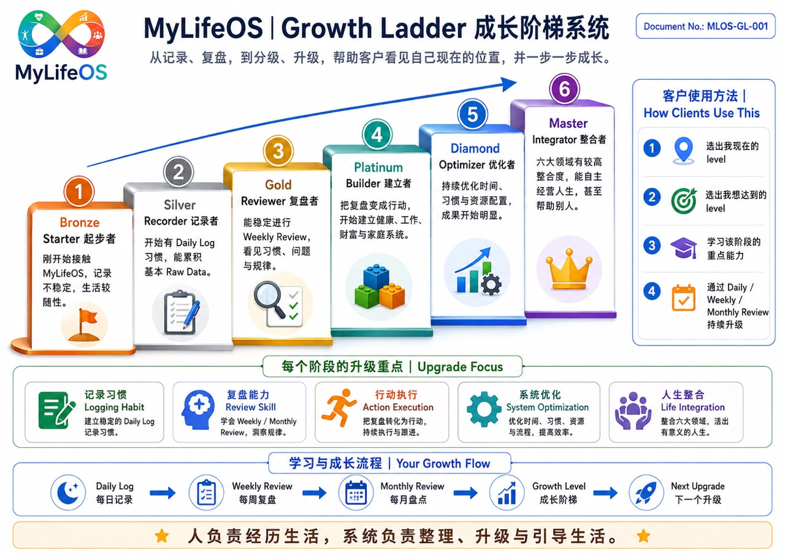

BOOK 5 · 1 / 14
序章 Beyond Myself，从哪里开始

这张图是全书地图。先看上方的现状、模式与路线，再看中间从认识自己到持续升级的循环。书里会一步一步拆开，不要求读者一次掌握所有模块。
全景图里的示意分数有一处不一致：“最强项健康70分”与雷达轴标注不相符。因此本书保留它的结构用途，不用这些数值判断强弱，也不把图中的幸福指数作为测评结果。
前面几本书，一直围绕我的生活展开。
我为什么开始记录？记录让我看见自己是谁？怎样建立一个能继续使用的方法？这些方法进入生活以后，又怎样影响我的选择？
写到这里，一个新的问题出现了：我走过的方法，能不能整理成别人也能尝试的路径？
这就是 Beyond Myself 的起点。
不是因为我已经把人生处理得完美，也不是因为自己的经历可以替所有人作答案。而是当一种方法能够说清、练习、检查和修改，它就有机会离开一个人的笔记，成为可以交流的经验。
Book 3 教我怎样留下资料与建立回顾。Book 4 讨论资料怎样参与生活中的选择。Book 5 再往前一步：怎样把记录、回顾和行动，变成可以学习的能力？
我把这条路径整理成五步：ASSESS，观察现在；POSITION，确认处境；REVIEW，回看依据；GROW，练习下一项能力；INTEGRATE，把它融进生活，也学会与别人分享。
图表给出一个共同的语言，生活则不断检验这个语言是否有用。两者需要一起往前走。
BOOK 5 · 2 / 14
第一章 ASSESS｜先看见现在，不急着升级
Part I — ASSESS｜建立自己的起点
成长很容易从一个比较开始：别人已经做到哪里，我为什么还没有？
但学习路径真正需要的起点，是自己现在的生活。有哪些责任必须承担，哪些部分已经稳定，哪些问题正在消耗注意力？这些条件不清楚，再漂亮的路线也可能走不下去。
第四本把健康、财富、关系、事业、学习与自由放在一起看。Academy 的雷达参考图使用健康、财富、关系、事业、个人学习与心灵。这里先沿用图中的六个轴；自由作为另一个重要结果，在人生模式里观察。心灵与自由不能不作说明就互换。

图中分数是示意，不是对读者作出的测量。开始时可以不用打分，只为每个领域写下一件具体的事：哪里顺利，哪里需要注意，依据是什么。
例如“我觉得最近很累”是感受；“这一周有几次工作结束后仍难以休息”是需要核对的线索。先把两者分开，就有了继续理解的空间。
观察不是寻找自己的缺点。已经有效的做法，同样值得留下。它们可能正是下一步学习可以借用的基础。
BOOK 5 · 3 / 14
第二章 Learning Priority｜找到眼前最值得练的一件事
一张生活地图可能同时显出很多需要改善的地方。但学习不必同时覆盖所有领域。
先看三件事：哪一个问题影响最大，自己现在有多少余力，什么改变是可以尝试的。最低的分数不一定就是最优先的任务，现实责任和可行动的范围也需要考虑。
一个虚构练习里，读者觉得工作、学习和休息都不理想。继续追问后发现，最常发生的困难是承诺散在几段聊天里，直到很晚才发现还有事情没处理。他可以先练习把确定的承诺放到一个可查找的位置。
这一步没有解决全部生活，却可能减少下一次重复寻找的负担。
学习目标也可以小到一句话：“这一周，我希望能找到自己答应过什么。”等到做得到，再讨论更复杂的回顾。
给自己留一张学习卡就够了：我看到的问题、相关记录、想练的能力、准备做的一步、什么时候回看。资料不足的部分写待确认。
起点越贴近现实，越容易知道后来的变化是不是有帮助。
BOOK 5 · 4 / 14
第三章 POSITION｜五大人生模式，看见处境与选择
Part II — POSITION｜分清生活处境与方法能力
五大人生模式，从生存、安全、选择、自由，延伸到财务自由。它描述的是一种观察生活压力与选择空间的方法。

在生存模式里，眼前的基本需要占据很多注意力。安全模式关注稳定与缓冲。选择模式开始问，除了完成必要责任，还希望把资源用于什么。
自由模式进一步关注时间与安排的自主性。图中的财务自由，则表达减少对持续主动工作收入依赖的愿景。
这些是概念上的位置，不是本书提供的财务评级。收入数字不能单独决定一个人的处境；需要承担的责任、支出、资源稳定性与风险也不相同。本书不以这张图承诺财富结果或给出投资路线。
人生也未必依次向上移动。有人在工作上有较多选择，却在照顾家人时需要重新安排时间；有人经历变化后，需要先回到稳定基本生活的任务。这不是人的价值下降。
图里把财富、开心与选择连接起来，表达的是作者希望关注的方向。开心指数没有在本书中经过测量，财富的变化也不能替代对健康、关系与内在感受的观察。
使用这张图，最有帮助的问题是：我现在受到什么限制，又希望多出哪一种选择？
BOOK 5 · 5 / 14
第四章 Two Maps｜我在哪里，与我会什么，是两张地图
五大人生模式回答“我处在怎样的生活条件里”。Growth Ladder 则回答“我已经能怎样使用记录、复盘和行动”。
两张图有关，却没有一一对应的关系。

这张路线图再补上一个问题：能力与资源改善以后，我希望生活发生什么变化？它把基础稳定、生活舒适、品质升级、自由探索与长期愿景放在一起。它与五大人生模式有关，但侧重点不同：模式帮助理解目前的限制，路线帮助说清希望获得的生活体验。
图中的旅行、消费或资产符号只是例子，并不是升级必须购买的东西。对某个人，更好的体验可能是有时间陪伴家人；对另一个人，可能是能够安心学习。生活改善要由当事人定义。开心指数50到90也是愿景示意，不表示能力或财富增加就必然得到某种幸福分数。
一个仍在应付生活压力的人，也可能很会回顾与调整。一个资源充足的人，也可能刚开始练习记录。我们不应因为一个人的财富位置，就推断他已经具备哪一级能力。
因此，定位时可以分开写两句话：目前最需要处理的生活限制是什么；目前已经能独立完成的方法是什么。
接下来，再写希望走向的处境，以及为此值得练习的一项能力。前者给方向，后者给眼前的学习任务。
这里的“下一阶段”，不一定是图上更高的一格。也可能是先把生活稳定下来，或者在已经熟悉的方法里补上一个薄弱环节。
定位应该减少混乱，而不是再加一个需要证明自己的身份。
BOOK 5 · 6 / 14
第五章 REVIEW｜让成长有可以回看的依据
Part III — REVIEW｜从记录走到理解
学习开始以后，我怎样知道自己不是只觉得有进步？
先留下尝试的材料。做了什么，遇到什么困难，后来补充了哪些解释。Daily Log 让这些片段有机会被找回；Daily Review 帮助看清当天的选择；Weekly Review 比较重复与变化；Monthly Review 再检查方向。
Book 3 已经说明怎样建立这些入口。到了 Book 5，我们把它们当作学习过程的依据，而不是重新增加几份报告。
我的记录里，曾有更正日期和补充休息情境的情况。它们说明，回顾不能只截取最早的说法。后续解释可能改变理解，也会影响对自己“有没有进步”的判断。
一次回顾可以只留下一个发现，但这个发现应当能指回材料。无法确认时，写成问题，比写成肯定结论更有用。
成长的依据不一定是漂亮数字。能够更准确地说明问题、发现原来的理解有误、主动修改安排，也可以是值得继续观察的变化。
BOOK 5 · 7 / 14
第六章 Review Into Practice｜每次回顾，选择一个练习
回顾提出了发现，练习才让发现进入生活。
一个虚构练习里，读者发现自己反复忘记跟进已经答应的事。他准备在结束工作前检查一次承诺列表。下周回顾时，不只问“我有没有更负责”，而是看检查有没有发生、有没有帮助找回遗漏、是否增加了过多负担。
如果没有做成，就看步骤是否太复杂，时间是否不合适。如果做了仍没帮助，便需要改变方法。练习结果不是给人打分，而是帮助找到更适合的做法。
一个完整的小循环是：记录问题，提出一个可尝试的调整，实行，留下结果，再决定继续、修改或暂停。
Daily、Weekly、Monthly 是不同距离的观察，不是每天必须完成的作业。现有资料只覆盖几天，就先说清这个范围。没有一整个月的依据，不需要写出一个月的成长故事。
当这样的循环能够再次发生，学习才开始有自己的节奏。
BOOK 5 · 8 / 14
第七章 Growth Ladder｜给能力一个共同的语言
Part IV — GROW｜练习下一阶段的能力
Growth Ladder 把方法能力分成六个观察阶段：Bronze Starter、Silver Recorder、Gold Reviewer、Platinum Builder、Diamond Optimizer、Master Integrator。

我希望这些名称帮助读者知道下一步练什么。它们不是资格认证，也不表示达到某一级，就不会再遇到困难。
同一个人可能在工作记录上很熟练，在家庭沟通上仍然需要学习。使用阶梯时，应当注明正在观察哪一种实践，而不是给整个人一个永久等级。
本书提出一个简单的检查方式：能否独立做一次，能否在另一段时间再做一次，能否解释为什么这样做，以及不适用时怎样调整。这是练习建议，不是已经验证的评估标准。
如果只有一次做得顺利，可以写“开始尝试”。如果能再次使用并解释依据，可以写“逐渐稳定”。比起急着领取一个头衔，留下实际例子更有帮助。
下面几章，就把每一级拆成看得见的能力。
BOOK 5 · 9 / 14
第八章 Bronze to Gold｜从愿意留下，到能够回看
Bronze Starter，是开始接触这套方法的人。记录未必稳定，也可能还不确定要留下什么。眼前的练习，是选一件真实发生的事，留下日期和必要情境。
Silver Recorder，开始有一个能够找回的记录习惯。重点不是写得长，而是把事实、感受与计划分清，知道资料在哪里。漏了一天以后，也能从现在继续。
Gold Reviewer，开始把记录放在一起比较。Daily Review 帮助理解一天；Weekly 和 Monthly Review 则逐步看见重复、变化与取舍。资料范围不足时，能够承认还不能下判断。
可以带来核对的材料分别很简单：一条可理解的记录；一组能按日期找回的记录；一份引用了实际材料、留下发现与下一步的回顾。
这三个阶段连接 Book 3。工具怎样设置只是入口，真正要练的是留下、找回与理解。
如果回顾听起来很完整，却找不到依据，就先回到记录。如果资料已经很多，却迟迟没有回看，就选一个小问题开始。学习不必总是朝一个方向走，回头补基础也属于成长。
BOOK 5 · 10 / 14
第九章 Platinum Builder｜让理解变成可重复的方法
Platinum Builder，开始把回顾中的发现带进行动。某种做法经过尝试以后，逐渐成为习惯、检查表或可以重复使用的流程。
例如，发现整理时容易漏掉更正，就在整理前加入核对步骤。是否有帮助，需要看后来的使用记录，而不是检查表写出来就算完成。
这个阶段可以保留三样材料：为什么需要改变，实际用了什么方法，使用后发生什么。
一段流程也需要说明适用条件。工作繁忙时怎样简化？中断后怎样接回？如果只有在很有空的时候才做得到，它可能还需要继续调整。
Book 4 的生活实践在这里接上成长阶梯。健康、工作、家庭与学习各有自己的节奏，方法要能跟着现实变化。
建立者的能力，是让一个有帮助的理解不只出现一次，而是逐渐变成可以再次使用的做法。
BOOK 5 · 11 / 14
第十章 Diamond Optimizer｜改善效果，也减少代价
Diamond Optimizer，开始检查已经运行的方法是否值得继续用。
同样的结果，能不能减少重复整理？一个省时间的安排，会不会把负担转移给别人？一套记录看起来很完整，却让自己越来越不想打开，是否应该删掉一些栏目？
优化不只追求更快，还要一起看准确性、维护成本和对生活的影响。
可以先选一个具体流程，保留调整前的情况，再试一个改变，比较之后的结果。一次同时改动太多地方，就很难知道什么产生了帮助。
某次尝试没有改善，也值得留下。它帮助我知道哪些方法在当前条件下不适合，而不必以后再次从头尝试。
时间、资源、财富与关系都可能进入这类观察，但不同领域需要不同依据。不能因为一个流程变快，就推断整个人生已经升级。
这个阶段的重点，是让系统更有帮助，也更容易持续使用。
BOOK 5 · 12 / 14
第十一章 Master Integrator｜整合，不是永远完美
Part V — INTEGRATE｜融进生活，也学会帮助别人
Master Integrator 所指向的，是能够把几种能力放在一起使用：观察现状，辨认联系，选择行动，回看结果，并在条件变化时重新安排。
六大领域的动态平衡，不是一张永远均匀的雷达图。有时工作需要更多精力，有时家人需要陪伴，有时恢复身体成为眼前的重点。整合，是知道这些取舍怎样发生，也记得在情况改变后重新检查。
这里依然保留 Life First. System Second. 能够简化系统、暂停不必要的记录，同样可能表现出成熟的使用能力。
帮助别人，也不能只凭一个等级名称。先理解对方需要什么，得到对方愿意参与的回应，再一起尝试一个小步骤。
自己的经验可以作为例子，但不能当作对方必须复制的人生。涉及对方的记录，分享范围与保留方式也需要说清楚。
真正的整合，不只是自己会用。它还包括知道哪些部分可以解释给别人，哪些仍然需要继续学习。
BOOK 5 · 13 / 14
第十二章 MyLifeOS Academy｜让别人也能走一遍
Academy 的起点，可以很小：一个真实问题，一次示范，一个练习，一份回顾，再加一次根据反馈作出的修改。
不必先做出很多课程，才知道方法能否被理解。读者能不能看懂任务，能不能独立尝试，能不能说出哪里不适合，都是学习设计需要听见的反馈。
一条可尝试的路径是：先用六大领域看现状；再用人生模式理解眼前限制；接着确认自己已经具备哪些方法能力；选择一个练习；通过日、周、月回顾检查；最后把有帮助的部分融进生活。
ASSESS → POSITION → REVIEW → GROW → INTEGRATE。
这条路径可以帮助整理课程方向，但本书本身不等于已经运行的培训平台。测评、课程、导师与认证若要建立，都需要各自清楚的内容和标准，不能只靠几张图就宣布完成。
我此刻能做的，是先把自己的方法写清楚，把没有验证的地方留下来，邀请读者用自己的现实检验它。
从“我怎样管理自己的人生”，走向“这套方法能否成为别人也走得通的成长路径”，Beyond Myself 才有了具体的工作。
BOOK 5 · 14 / 14
尾声 成长以后，我想把能力用在哪里
全景图把过程放在一起，雷达帮助观察，五大模式帮助定位，层级路线把愿望落到生活体验，Growth Ladder 再说明需要练习哪些能力。
成长阶梯不是一场必须赢过别人的比赛。它给我一个回看的位置：哪些事情已经做得到，哪些还需要练习，哪些方法值得分享。
人生模式帮助我理解处境，六大领域帮助我看见完整生活，记录与复盘提供依据，成长阶梯则把下一步能力说得更具体。
这些模型最后都要回到一个人真实的日子里。能不能少一点重复困惑，多一点清楚的选择；能不能把经验整理成有帮助的东西，同时尊重别人不同的处境。
这就是第五本希望建立的连接：自己的成长，可以逐渐形成能够交流、练习和修正的方法。
到了第六本，问题会继续往前：当我已经更清楚自己的处境与能力，我希望把它们用来创造怎样的未来？
未来不只是一张更高等级的图。它应该包含我想怎样生活、怎样对待身边的人，以及愿意长期投入的事情。我们带着这些问题，继续往前走。